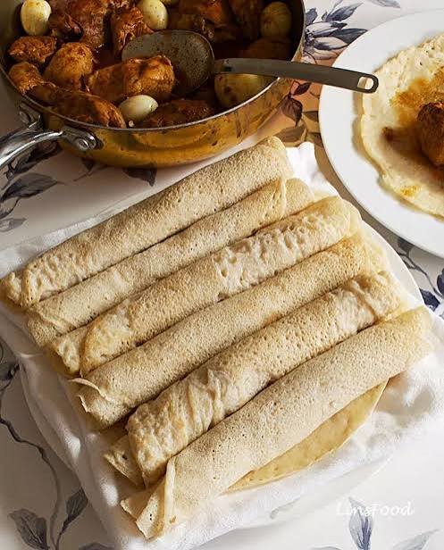

Doro Wat
Slow-simmered chicken drumsticks in a rich berbere sauce, served with a hard-boiled egg and injera.
- Chicken drumsticks
- Berbere spice blend
- Niter kibbeh
- Red onions
- Hard-boiled egg
- Injera

Founded in 2008 on Bole Road, Habesha Eatery was born from a simple belief: that Ethiopian food — slow-cooked, spice-rich, and meant to be shared — deserves a home worthy of its heritage. Every dish is prepared with hand-ground berbere, house-made niter kibbeh, and injera fermented for 72 hours from 100 % teff.
We source directly from smallholder farmers in Tigray, Oromia, and Sidama, keeping traditions alive while supporting the communities that shaped them. Pull up a mesob, tear off a piece of injera, and eat together — the Habesha way.